Cigares aux amandes et à la pistache arrosés de sirop de miel

Délicieuse recette de cigares aux amandes, pistache, fleur d’oranger et sirop de miel! Trop bon^^ !!
Ça y est nous voila réunis pour la battle food#27 et attention pas n’importe laquelle car j’ai eu l’immense honneur d’être désignée comme marraine par Maïa de petits béguins! Ce fut une très grande surprise mais surtout une immense joie car comme vous le savez je suis adepte de ce genre de petits défis culinaires! J’ai longtemps hésité sur le choix du thème et finalement j’ai opté pour quelque chose que j’aime par dessus tout, de simple et qui se cuisine aussi bien pour des recettes salées que sucrées! J’ai en effet choisi « L’AMANDE »! Ravie de constater que je ne suis pas la seule à adorer ça, cette battle promet de très belles choses! <3 J’ai hâte de découvrir les participations des uns et des autres et je vous donne rendez vous sur mon compte pinterest pour un tableau regroupant toutes les gourmandises de cette édition en fin de journée!
Pour ma part, j’ai décidé de réaliser de délicieux cigares aux amandes, pistache, fleur d’oranger arrosés généreusement d’un sirop au miel! Rien à voir avec les « classiques » cigares aux amandes qui sont généralement préparés avec des feuilles de bricks. En effet, ceux là ont la garniture enroulée dans de la pâte filo comme les baklavas et elle est aussi beaucoup moins compact. J’aime beaucoup cette version sucrée des cigares que l’on peut servir pour le goûter ou pour le café mais il en existe aussi au fromage (mmmmmh) ou garnis d’une délicieuse farce salée mais je vous réserve tout ça pour un autre jour! Vu que l’on aime particulièrement les pâtisseries Orientales cette battle food était une bonne occasion de partager avec vous cette recette!
J’espère que cette nouvelle gourmandise vous plaira! Je vous laisse maintenant découvrir la recette 🙂
Mis à jour du 05.01.15 : Il est temps pour moi d’annoncer la nouvelle marraine!!! Tout d’abord, merci à tous d’avoir participé et de nous avoir proposé autant de belles recettes!!! Moi qui avait peur de n’avoir que des galettes j’ai été ravie de découvrir plein d’autres belles idées! Le choix de la future marraine n’a pas été simple et j’ai du mettre mes sentiments et affinités de côtés car j’avais un bon paquet de copinautes présentes sur cette battle!!!!
J’ai donc choisi après concertation avec mon chéri de désigner comme marraine de la Battle#28 : Hanane du blog Safran Gourmand qui nous a régalé avec son pain au levain aux amandes et aux abricots et qui nous propose très régulièrement de très belles choses alors maintenant Hanane c’est à toi, on attend le thème avec impatience!!!!!
Merci encore à tous les autres participants et à très bientôt 🙂 <3
Ingrédients
- Feuilles de pâte filo - 1 paquet
- Pistaches - 70g
- Amandes effilées - 85g
- Eau de fleur d'oranger - 1càs
- Sucre - 70g
- Extrait de vanille - 1càc
- Eau - 4 càs
- Jaune d'oeuf - 1
- Blanc d'oeuf - 1
- Miel - 180g
- Eau de fleur d'oranger - 1càs
Instructions
- Dans un robot, réduire les amandes et les pistaches en une fine pâte
- Verser le mélange amandes-pistaches dans une poêle
- Ajouter le sucre et 4 cuillères à soupe d'eau
- Cuire à feu très doux pendant 4 minutes tout en mélangeant
- Hors du feu, ajouter le jaune d’œuf et l'eau de fleur d'oranger, remuer
- Découper vos feuilles de pâtes filo en carrés selon la taille du cigare que vous souhaitez obtenir (ici ils font entre 17 et 20cm)
- Placer un carré de pâte filo sur votre plan de travail
- Étaler environ une cuillère à soupe (selon la taille de votre pâte filo) du mélange en une fine bande le long du bord le plus proche de vous. Laisser environ 2cm d'espace sur les côtés.
- Rabattre le bord droit et gauche sur la farce et rouler la pâte de manière à obtenir un cigare en serrant bien
- Fermer le cigare en badigeonnant le bord du haut de blanc d’œuf avant de le rabattre sur le cigare
- Répéter l’opération avec le reste de farce
- Dans une poêle, faites chauffer de l'huile
- Frire les cigares 10 secondes de chaque côté jusqu'à ce qu'ils soient dorés (attention ça va vite!!!)
- Laisser les refroidir sur du papier absorbant
- Dans une casserole, ébouillanter le miel avec 1càs d'eau de fleur d'oranger
- Plonger totalement les cigares dans le sirop chaud
- Placez les sur un plat
- Parsemer de pistaches concassées et arroser avec le sirop restant
- Laisser refroidir
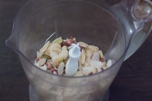
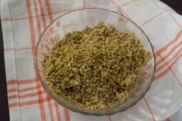
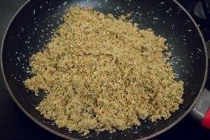
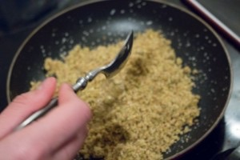
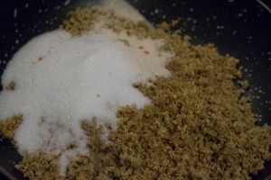
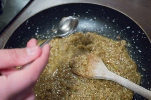
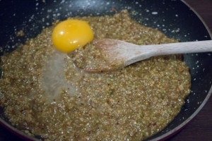
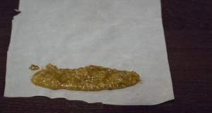
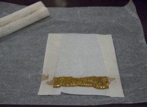
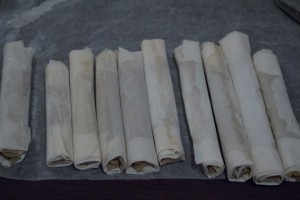
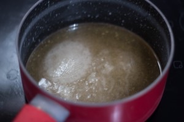
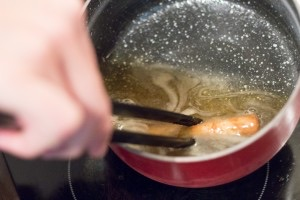
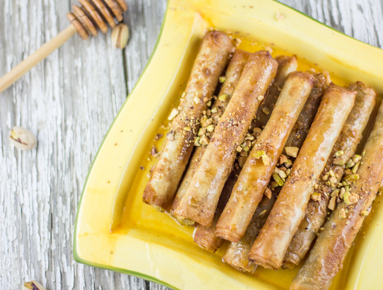
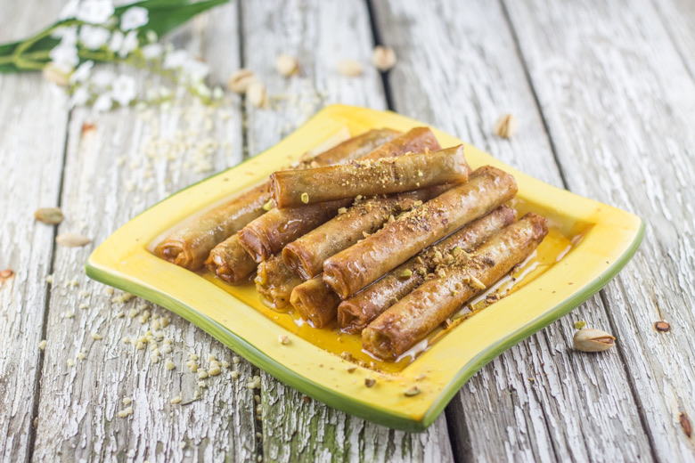
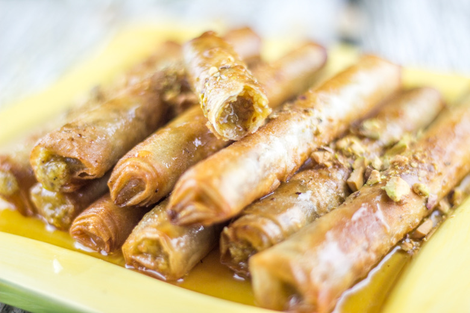
Les tips de la communauté
Recette très enthousiasmante avec des commentaires élogieux sur le goût et la présentation. Les lecteurs apprécient la simplicité de réalisation et l'originalité des saveurs orientales. Très bon retour global.
Astuces
- La recette est simple et rapide à réaliser
- Le pliage est simple contrairement à d'autres pâtisseries orientales
- La pâte filo est préférable à la feuille de brick pour meilleur rendu
- Accompagner avec un thé à la menthe pour l'accord parfait
Variantes suggérées
- Remplacer la fleur d'oranger par du thé noir selon les préférences
- Utiliser des noix à la place des pistaches
- Adapter le sirop de miel selon les goûts
Ajustements signalés
- Les pistaches salées ne conviennent pas, préférer les pistaches nature